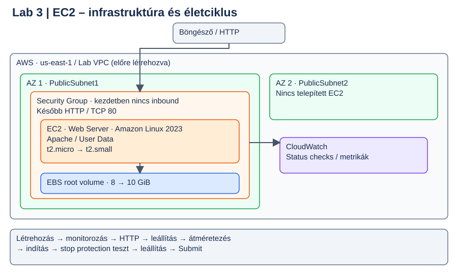
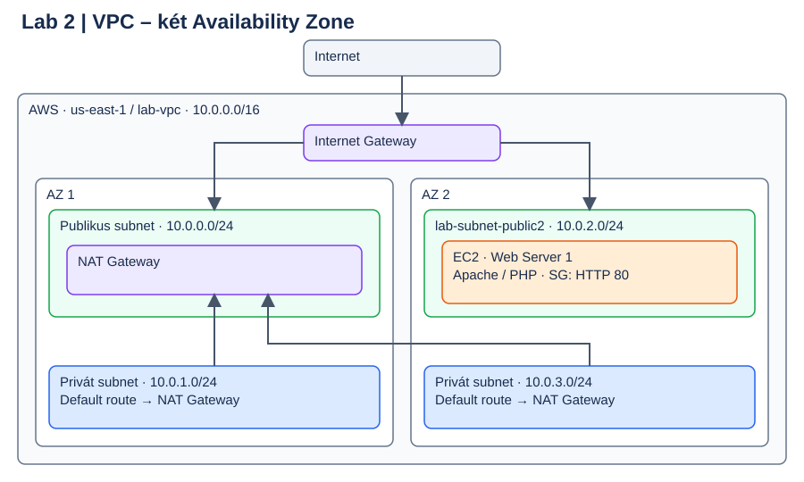

10. hét – AWS alapok és Azure–AWS megfeleltetések
15 feladat · AWS Academy / EC2 / VPC / S3 / IAM / AWS CLI
Órai idő: 90 perc (regisztráció előzetesen). Kövesd az AWS Academy hivatalos laborutasításait, az erőforrásneveket pontosan tartsd be. A munkafüzetbe saját eredményeidet másold, képernyőkép nem szükséges. A válaszok helyben automatikusan mentődnek. Jelszót, access key-t, secret key-t, session tokent vagy privát kulcsot ne adj be! Beadási határidő: 2026. december 3., 11:40 (magyar idő).
Neptun-kód (kötelező, 6 karakter):
A gyakorlat célja
Az AWS infrastruktúra megismerése két irányított labor és parancssori lekérdezések segítségével. Az Azure-ban megismert fogalmak AWS-megfelelői tájékozódási segítségként:
| Azure | AWS |
|---|---|
| Virtual Machine | EC2 instance |
| Virtual Network | VPC |
| Subnet | Subnet |
| Network Security Group | Security Group (közelítő megfelelő) |
| Managed Disk | EBS volume |
| Blob Storage | S3 |
| Azure Monitor | CloudWatch |
| Azure RBAC / Entra ID | IAM (részleges funkcionális megfelelés) |
I. AWS Academy – előzetes regisztráció
1. Meghívó elfogadása
Platform: AWS Academy / email.
Nyisd meg az egyetemi email-címre érkezett meghívót, fogadd el és fejezd be a regisztrációt.
Ellenőrizd a levélszemét mappát; hiányzó meghívó esetén jelezd az oktatónak.
2. Kurzus megnyitása
Platform: AWS Academy.
Jelentkezz be, nyisd meg a Cloud Foundations kurzust, keresd meg a Lab 3 és Lab 2 feladatokat.
II. Lab 3 – Introduction to Amazon EC2 (30 perc)

Indítsd el a Lab 3 környezetet (Start Lab), várd meg a zöld jelzést, majd nyisd meg az AWS konzolt. Régió: N. Virginia (us-east-1). A hivatalos labor becslése 35 perc.
3. EC2 létrehozása
Platform: EC2 Console.
Végezd el a Task 1 lépéseit: Web Server, Amazon Linux 2023, t2.micro, vockey, Lab VPC, PublicSubnet1, új Web Server security group bejövő szabály nélkül, 8 GiB EBS, termination protection és a labor User Data szkriptje. Várd meg a futó állapotot.
Explicit deny esetén ellenőrizd a régiót, a Lab VPC-t és a PublicSubnet1 kiválasztását, valamint az előírt instance type-ot. Ne próbáld megkerülni a jogosultsági korlátozást; másold a hibát és jelezd az oktatónak.
4. Monitorozás
Platform: EC2 / CloudWatch.
Task 2: nyisd meg a Status checks és Monitoring lapokat, majd a Get system log és Get instance screenshot funkciókat.
Ha a log vagy metrika még nem érhető el, várj röviden, majd frissíts; dokumentáld a tényleges állapotot.
5. HTTP-hozzáférés
Platform: EC2 / böngésző.
Task 3: próbáld elérni a publikus IPv4 címet HTTP-n, majd add hozzá az előírt HTTP / Anywhere-IPv4 szabályt a security grouphoz, és ismételd meg a tesztet.
Használj http:// előtagot. A nyitott HTTP-szabály csak az ideiglenes laborhoz szükséges.
6. Átméretezés és védelem
Platform: EC2 / Service Quotas.
Task 4–6: állítsd le a gépet, módosítsd t2.small típusra, engedélyezd a stop protectiont, növeld az EBS méretét 10 GiB-ra, indítsd el. Nézd meg az EC2 kvótákat. Próbáld leállítani, majd kapcsold ki a stop protectiont és állítsd le.
7. Lab 3 beadása
Platform: Vocareum.
Submit → Yes → Grades → Submission Report. Másold ki az eredményeket, majd End Lab.
Egyes ellenőrzésekhez öt perc várakozás szükséges. Ha indokolt, ismételd meg a Submit műveletet; az utolsó beadás számít.
III. Lab 2 – Build your VPC and Launch a Web Server (45 perc)

Indítsd el a külön Lab 2 környezetet. A két labor erőforrásai nem feltétlenül azonos munkamenetben érhetők el.
8. VPC és átjárók
Platform: VPC Console.
Task 1: hozd létre a lab-vpc hálózatot a hivatalos VPC and more beállításokkal (10.0.0.0/16, egy AZ, egy publikus és egy privát subnet, NAT gateway egy AZ-ban).
Várd meg a létrehozási folyamat végét, különösen a NAT gateway rendelkezésre állását.
9. További subnetek
Platform: VPC Console.
Task 2: hozd létre a második AZ publikus és privát subnetjét az előírt nevekkel és CIDR-ekkel.
10. Útválasztás
Platform: VPC Console.
Task 2: rendeld a második privát subnetet a privát route table-höz, a második publikus subnetet a publikus route table-höz a labor szerint.
11. Web Security Group
Platform: VPC Console.
Task 3: hozd létre a Web Security Groupot a lab-vpc hálózatban, a laborban előírt HTTP inbound szabállyal.
12. Web Server 1
Platform: EC2 / böngésző.
Task 4: indítsd el a Web Server 1 instance-t Amazon Linux 2023, t2.micro, vockey, lab-subnet-public2, publikus IP engedélyezése, meglévő Web Security Group és a hivatalos User Data szkript használatával. Teszteld a publikus DNS címet HTTP-n.
Ha nem tölt be az oldal, ellenőrizd a publikus subnetet, route table-t, HTTP-szabályt és várd meg a User Data futását.
13. Lab 2 beadása
Platform: Vocareum.
Submit → Yes → Grades → Submission Report. Rögzítsd az eredményt. A riport rögzítése után zárd le a labort (End Lab). A következő feladatok külön Sandbox környezetben futnak.
IV. AWS CLI – irányított lekérdezések (15 perc)
14. Sandbox indítása és AWS CloudShell megnyitása
Platform: AWS Academy / Sandbox / AWS Management Console.
- Az AWS Academy kurzusban nyisd meg a Modules → Sandbox environment elemet.
- Kattints a Start Lab gombra. Az indítás akár 4–5 percig is eltarthat.
- Várd meg, amíg az AWS állapotjelző zöldre vált, majd kattints az AWS ikonra az AWS Management Console megnyitásához.
- A konzol felső menüsorában kattints a CloudShell ikonra (
>_). Várd meg a parancssor megjelenését.
Ne a Vocareum beépített Terminal ablakát használd, hanem az AWS Management Console CloudShell környezetét. A CloudShell automatikusan átveszi az aktuális munkamenet hitelesítését, ezért nincs szükség az aws configure parancsra vagy hozzáférési kulcsokra. Ha nem indul el, ellenőrizd a labor állapotát és jelezd az oktatónak.
15. AWS-erőforrások lekérdezése
Platform: AWS CloudShell / Bash.
Futtasd egymás után a következő három lekérdező parancsot. Másold be a parancsokat és a tényleges kimenetüket az alábbi mezőbe.
EC2 instance-ok:
aws ec2 describe-instances --region us-east-1 \
--query 'Reservations[].Instances[].{ID:InstanceId,Type:InstanceType,State:State.Name,PrivateIP:PrivateIpAddress}' \
--output tableVirtuális hálózatok (VPC):
aws ec2 describe-vpcs --region us-east-1 \
--query 'Vpcs[].{ID:VpcId,CIDR:CidrBlock}' --output tableS3 bucketek:
aws s3 lsA parancsok másolhatók a munkafüzetből. Ha a kimenet üres, ezt is dokumentáld; ne hozz létre új erőforrást. Ha jogosultsági hiba jelenik meg, másold be a hibaüzenetet és jelezd az oktatónak. Ha lapozó nyílik meg, a q billentyűvel léphetsz ki.
A kimenetek rögzítése után zárd le a Sandbox labort (End Lab).
Beadás: ellenőrizd a 15 mezőt, majd használd a Beadás gombot. Tartalék: JSON export.
Mentés és beadás
A válaszok automatikusan mentődnek ebben a böngészőben. A szerveres beadást az oktató a közzététel előtt ellenőrzi a 10. heti feladatokhoz. A beadás előtt ellenőrizd a Neptun-kódot és a kitöltött mezőket. A formai ellenőrzés nem helyettesíti a parancsok tényleges futtatását.
Beadási határidő: 2026. december 3., 11:40 (magyar idő).
Beadás előtti összesítés
Az időmérés és az eseménykövetés a projekt config/setup.js fájljából konfigurálható. Az SSH-terminálban végzett munka nem feltétlenül számít böngészőbeli aktív időnek.
Időmérés: – · Eseménykövetés: –
Becsült aktív idő: 0:00 · Szerkesztések: 0
Első megnyitás: – · Utolsó aktivitás: –
```